BUPT International School
TA Recruitment System — User Manual
Version 4.0 | May 2026 | Group 02 | EBU6304 Software Engineering
1. Getting Started
1.1 Demo Accounts
Three pre-configured accounts are available for demonstration. Each account has a different role with distinct permissions:
| Role | Email | Password | Capabilities |
|---|
| TA |
james@school.edu |
Password123! |
Browse jobs, apply, manage profile & CV, track applications, AI job matching |
| MO |
kevin.zhao@school.edu |
Password123! |
Create/edit jobs, review applicants, view CVs, select/reject candidates, AI summaries |
| Admin |
admin.chen@school.edu |
Password123! |
Monitor users, applications & workload, AI risk analysis, system-wide oversight |
Tip: Use a separate browser window or incognito tab for each role during the demo to avoid session conflicts.
1.2 System Requirements
| Component | Requirement |
|---|
| Java | JDK 17 or higher |
| Servlet Container | Apache Tomcat 10.1+ |
| Browser | Chrome 90+, Firefox 90+, Edge 90+, or Safari 15+ |
| Deployment | Place ta-recruitment-system.war in Tomcat webapps/ |
| Access URL | http://localhost:8888/ta-recruitment-system/pages/login |
| AI Features | Requires ZhipuAI API key configured in Tomcat setenv.bat |
1.3 Data Storage
The system persists all data as JSON files under the data/ directory. No external database is required. Data is loaded at startup and written back after every mutation.
2. Login & Registration
2.1 Login Page
All users access the system through the Login page. This is the entry point for the entire application:
- Select your role from the dropdown (TA / MO / Admin) — this is required and validated on the server
- Enter your registered email address
- Enter your password
- Click Sign In
The system validates the role-email-password combination and redirects to the role-specific dashboard on success. Incorrect credentials display an error message without revealing which field was wrong.
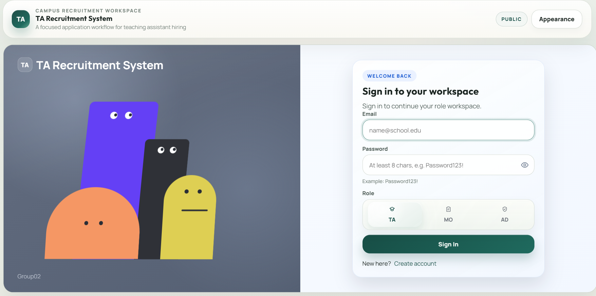
2.2 Registration Page
New users (primarily Teaching Assistants) can create an account via the Register page. Navigate from the Login page by clicking the registration link:
- Fill in all required fields: name, email, password, skills, major, and contact information
- Select TA as the role (MO and Admin accounts are pre-created by the system administrator)
- Click Register to submit
Email addresses must be unique across the system. If the email is already registered, you will see a validation error. After successful registration, you are redirected to the Login page to sign in.
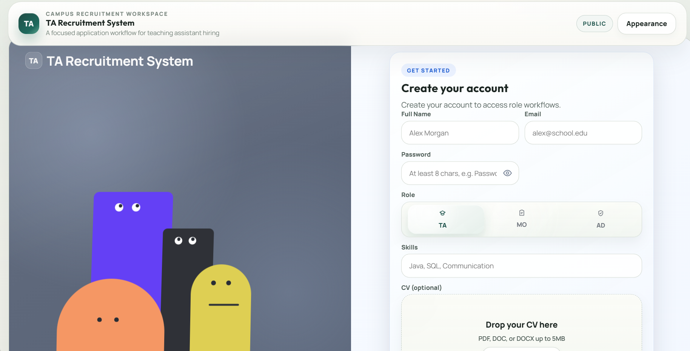
3. Teaching Assistant (TA)
The TA role is designed for students applying to Teaching Assistant positions. Key capabilities: browse open jobs, submit applications, manage your profile and CV, track application statuses, and receive AI-powered job recommendations.
3.1 TA Dashboard
After login, the TA dashboard provides an at-a-glance overview of your recruitment status with four summary cards:
- Open Jobs — number of currently open TA positions you can apply for
- Submitted Applications — total applications you have sent
- Pending Review — applications awaiting MO decision
- Selected — applications where you have been accepted
Below the summary cards, the dashboard displays your Latest Applications (most recent 5, with status badges) and AI-Recommended Jobs (personalized suggestions based on your profile skills).
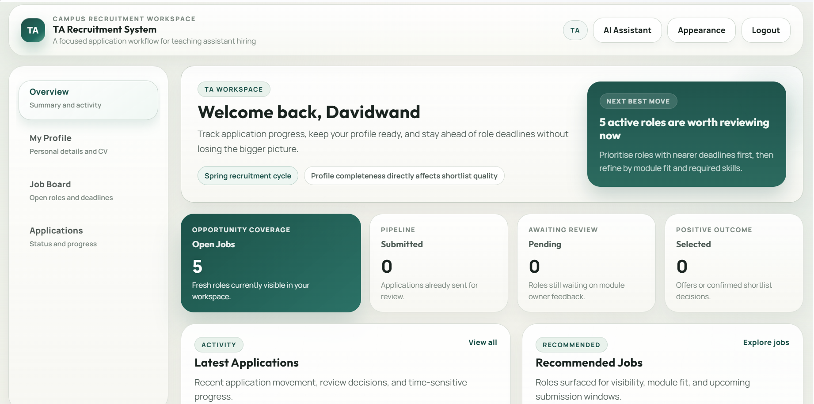
3.2 My Profile & CV Management
Open My Profile from the navigation bar to manage your personal information and curriculum vitae:
- Edit Profile Fields — update your name, email, skills, major, and contact details at any time
- Upload CV — supported formats: PDF, DOC, DOCX; maximum file size: 5 MB
- View CV — opens your uploaded CV in a new browser tab for preview
- Remove CV — deletes the current CV file so you can upload a new one
Your CV is a critical part of your application — MOs review it when making selection decisions.
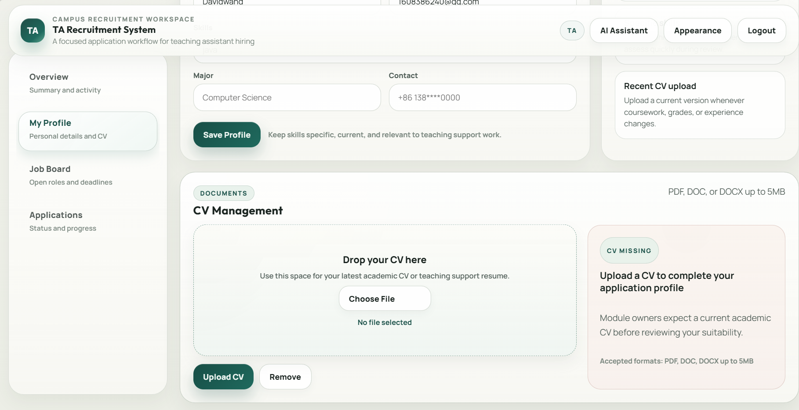
3.3 Job Board
Open Job Board to browse all open TA positions across modules:
- Search — filter jobs by keyword (matches title, module name, required skills, and description)
- Module Filter — narrow results to a specific module
- Job Cards — each card shows the module name, job title, application deadline, required skills as tags, and weekly hours commitment
- Quick Apply — submit your application directly from the job card without opening the detail page
- Generate Matches — AI-powered button that ranks all open jobs by how well they match your profile skills (see Section 3.6)
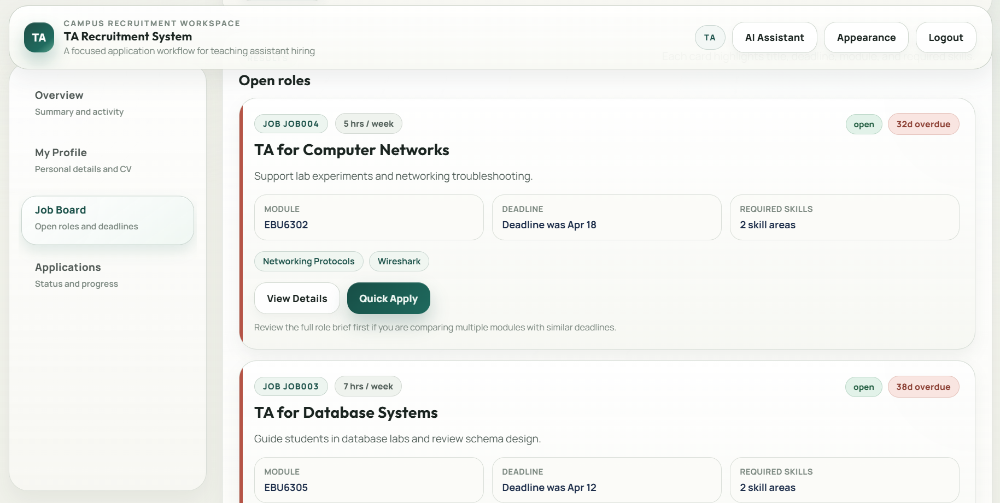
3.4 Job Detail & Apply
Click any job card to open the Job Detail page, which displays the full information for that position:
- Complete job description and responsibilities
- Required skills (listed as individual tags for clarity)
- Application deadline (applications close after this date)
- Estimated weekly hours commitment
- Module name and associated Module Organiser
Click Apply Now to submit your application. The system enforces duplicate-application protection — you cannot apply twice to the same job. After applying, your application status is set to Pending and appears immediately in the Application Tracker.
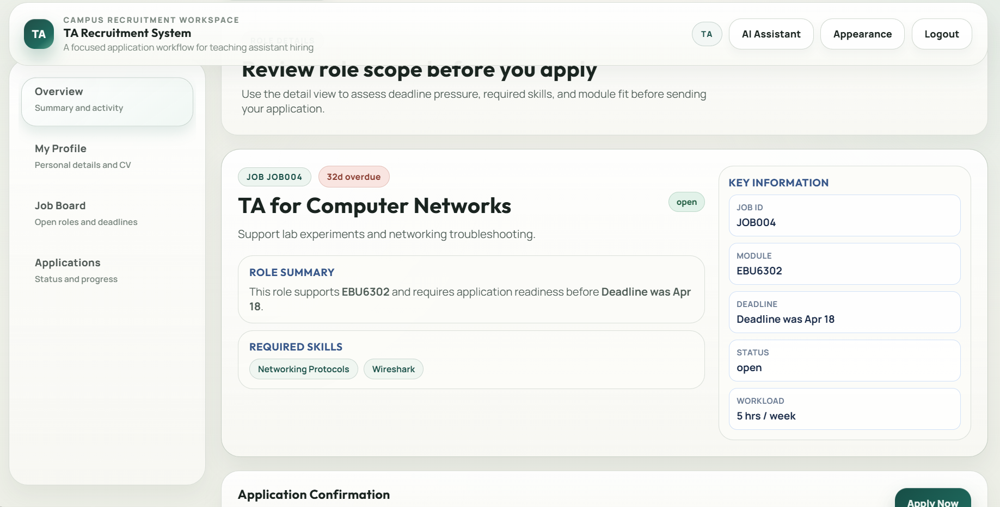
3.5 Application Tracker
Open Applications from the navigation bar to track all your submitted applications in one place:
- Status Filters — toggle between All / Pending / Selected / Rejected to focus on specific outcomes
- Keyword Search — search across job titles and module names
- Status Badges — each application card shows its current status with color-coded badges:
- ● Pending — awaiting MO review
- ● Selected — accepted by the MO
- ● Rejected — declined by the MO
- Status updates from MO decisions are reflected here in real time
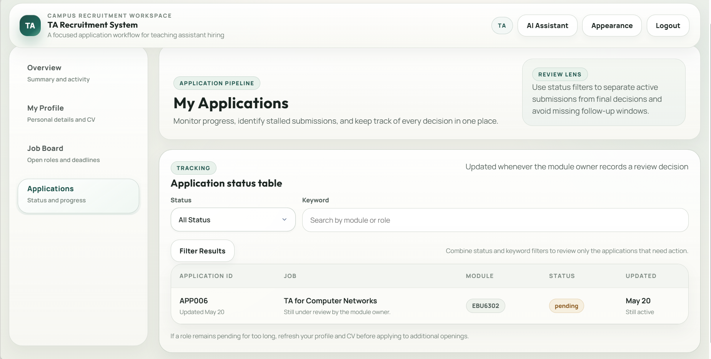
3.6 AI Assistant (TA)
TA users have two AI entry points:
- Job Board — Generate Matches: Click the Generate Matches button on the Job Board page. The AI analyzes your profile skills against all open jobs and returns a ranked list of recommendations with match explanations. This helps you prioritize which jobs to apply for first.
- Top Bar — Global AI Assistant: Access the AI chat panel from the top navigation bar. Ask role-specific questions like:
- "Which jobs should I apply for first?"
- "What skills should I add to my profile?"
- "Summarize my current application status"
Important: AI output is advisory only. Always review job details in full before submitting an application. The AI does not apply on your behalf.
4. Module Organiser (MO)
The MO role is designed for module organizers who post TA positions and select candidates. Key capabilities: create and manage job postings, review applicants with CV access, generate AI candidate summaries, and make selection/rejection decisions with workload protection.
4.1 MO Dashboard
After login, the MO dashboard displays key recruitment metrics relevant to your modules:
- Active Jobs — number of open and active TA positions you have posted
- Total Applicants — cumulative applications received across all your jobs
- Pending Reviews — applications still awaiting your decision
- Selected — total number of TAs you have accepted
- Near Deadline Jobs — a warning list of jobs with approaching deadlines that still need attention
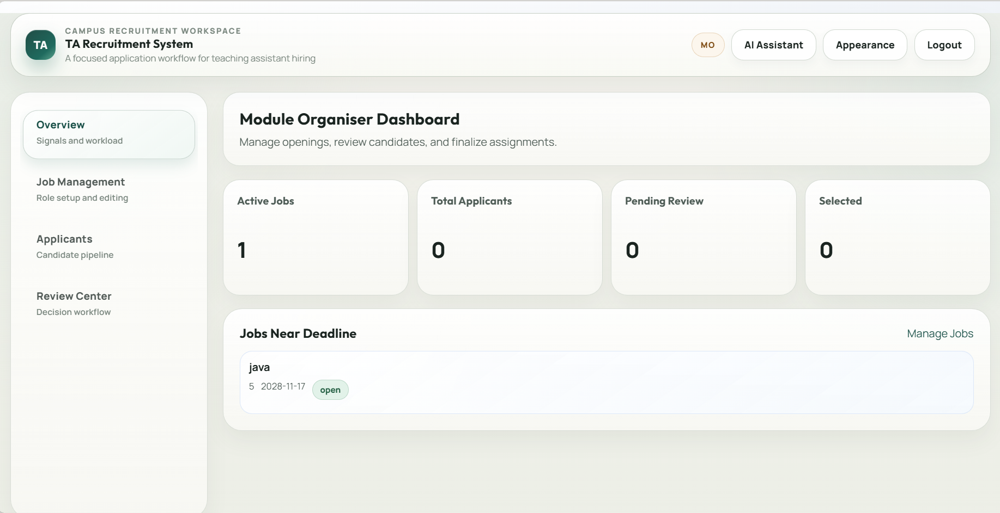
4.2 Job Management
Open Job Management from the navigation bar to create, edit, and manage your TA positions:
- Create Job — click the New Job button and fill in:
- Job title (e.g., "Software Engineering Lab TA")
- Module name (select from your assigned modules)
- Required skills (comma-separated, displayed as tags)
- Full job description and responsibilities
- Application deadline date
- Weekly hours commitment (used for workload calculation)
- Edit Job — modify any field of an existing open job posting
- Filter & Search — search jobs by keyword and filter by status (Open / Closed)
- View Applicants — click the Applicants button on any job card to see who has applied (see Section 4.3)
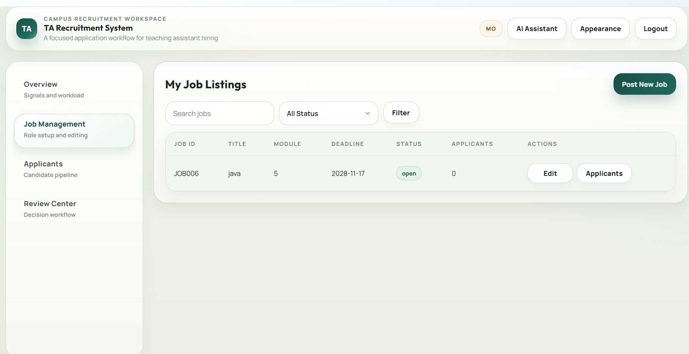
4.3 Applicant List
Open Applicants from the navigation bar, or click the Applicants button on any job card. This view lists all candidates who have applied to your jobs:
- Filter by Job — select a specific job posting to view its applicants
- Filter by Status — toggle between All / Pending / Selected / Rejected
- Keyword Search — search candidates by name, skills, or email
- Applicant Cards — each card shows the candidate name, applied job, application date, and current status badge
- Open Review — click any applicant to enter the full review page (see Section 4.4)
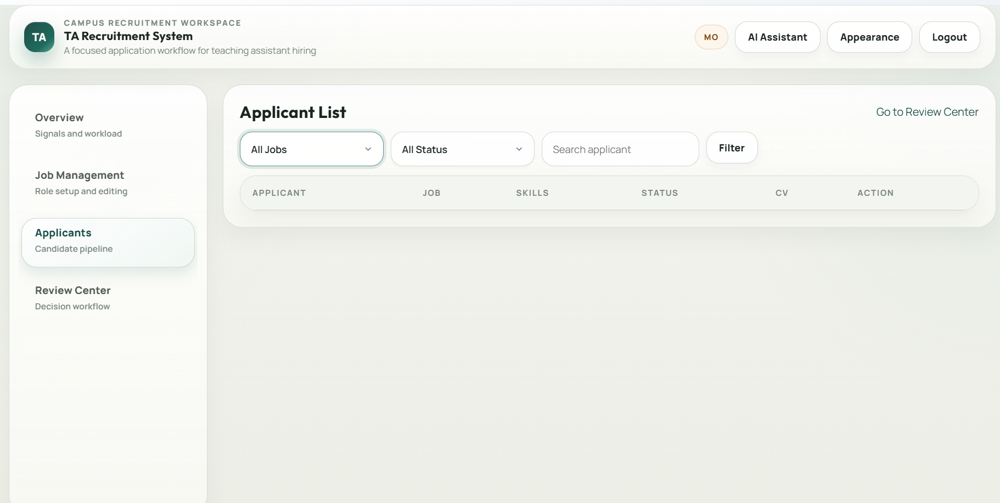
4.4 Candidate Review
The Review page is the core MO workflow for evaluating a single candidate. For each applicant you can:
- View Profile — read the candidate's full profile: name, email, skills, major, and contact information
- View CV — open the candidate's uploaded CV file in a new tab for detailed review
- Generate AI Summary — click Generate Summary to produce an AI candidate brief (see Section 4.5)
- Write Review Note — add a private note documenting your assessment (visible only to MOs and Admins)
- Select Candidate — accept the candidate by clicking Select
- Reject Candidate — decline the candidate by clicking Reject
Workload Protection: The system automatically checks the candidate's total assigned weekly hours before allowing selection. If accepting this TA would push their total hours above the safe threshold, selection is blocked with a clear warning message. This prevents any single TA from being over-assigned across multiple modules.
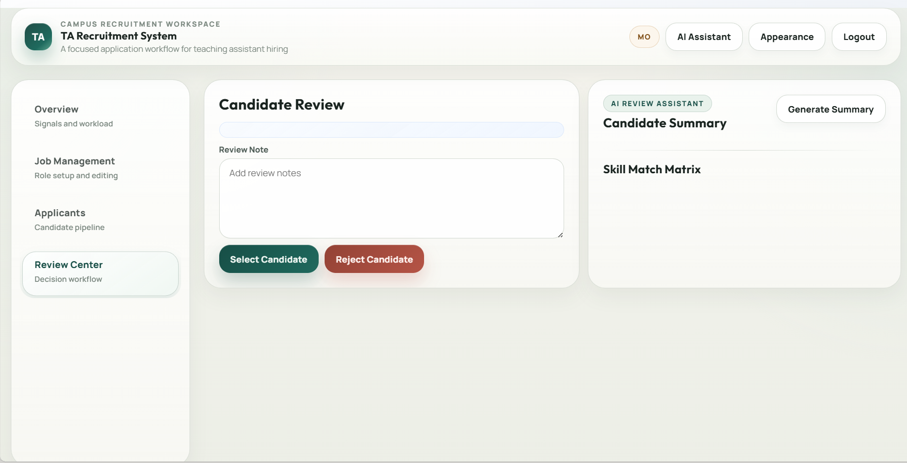
4.5 AI Assistant (MO)
MO users have two AI access points:
- Review Page — Generate Summary: On the candidate review page, click Generate Summary. The AI produces a structured candidate brief covering:
- Evidence — how the candidate's skills and CV align with the job requirements
- Skill Gaps — required skills not found in the candidate's profile
- Suggested Questions — potential follow-up questions for an interview
- Top Bar — Global AI Assistant: Ask questions like:
- "Which candidate evidence should I verify?"
- "Summarize pending reviews across my jobs"
- "Which jobs have the most applicants?"
Important: The AI summary is a reference tool, not a decision maker. The final selection or rejection decision must be made by you based on your professional judgment.
5. Administrator (Admin)
The Admin role provides system-wide oversight and monitoring. Admins do not create jobs or make selection decisions — they monitor user activity, application flows, and workload distribution across the entire system.
5.1 Admin Dashboard
The Admin dashboard provides a high-level system overview with key metrics:
- Total Users — count of all registered users across all roles
- Open Jobs — total open TA positions system-wide
- Total Applications — all applications submitted across the system
- Overload Count — number of TAs flagged with workload warnings
- Recent Applications — latest 10 applications with role, job, and status information
- Workload Alerts — highlighted TAs with Warning or Overload risk levels
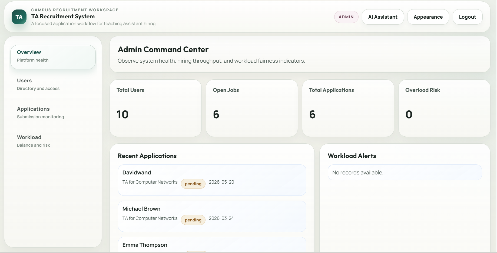
5.2 User Management
Open Users from the navigation bar to view all registered users in the system:
- Role Filter — filter the user list by TA / MO / Admin to focus on a specific role
- Keyword Search — search users by name or email address
- User Cards — each card displays the user's name, email, role badge, major (for TAs), and registration date
This view is read-only for the baseline scope. User creation and deletion are managed through the registration flow and backend data respectively.
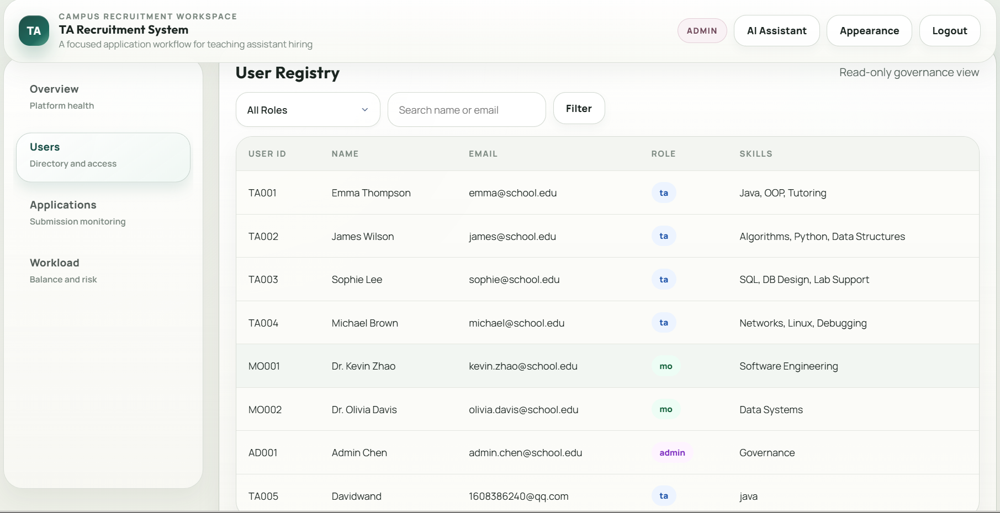
5.3 Application Monitoring
Open Applications to monitor all recruitment records globally across every module and role:
- Status Filter — filter by Pending / Selected / Rejected to audit specific workflow stages
- Module Filter — narrow to applications for a specific module
- Keyword Search — search by candidate name, job title, or module
- Full Visibility — unlike TA and MO views, the Admin sees all applications including their associated MO review notes
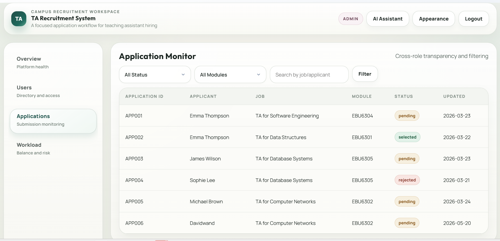
5.4 Workload Monitoring
Open Workload to inspect TA assignment distribution and identify potential over-assignment risks:
- Risk Level Filter — filter TAs by workload risk:
- ● Warning — approaching the workload threshold
- ● Overload — exceeding the safe workload limit
- Workload Cards — each card shows a TA's name, number of selected modules, total weekly hours, and risk badge
- Generate Risk Analysis — click to produce an AI-driven operational risk assessment (see Section 5.5)
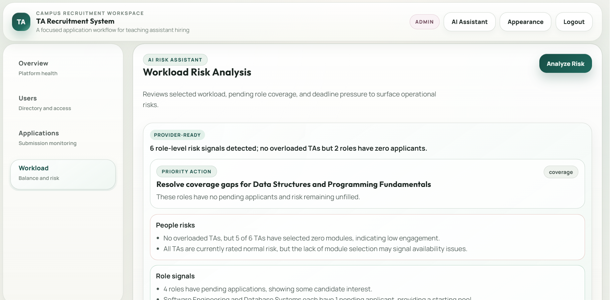
5.5 AI Assistant (Admin)
Admin users have two AI entry points:
- Workload Page — Analyze Risk: Click Generate Risk Analysis on the Workload page. The AI evaluates the current TA assignment distribution and produces a structured risk assessment identifying:
- TAs at or near the overload threshold
- Modules with uneven TA distribution
- Potential operational bottlenecks
- Top Bar — Global AI Assistant: Ask system-wide questions like:
- "Who has workload risk?"
- "Show me modules without enough TAs"
- "Summarize all pending applications"
6. Global AI Assistant
The AI Assistant button is available in the top navigation bar for all logged-in users. This is a role-aware, general-purpose chat interface powered by ZhipuAI GLM:
- Click the AI Assistant button in the top bar to open the chat panel
- Type a question relevant to your role and the current system state
- The AI responds with a structured answer card containing:
- A direct answer to your question
- Supporting context drawn from system data
- Suggested next actions (manual steps you should take)
- Close the panel or ask follow-up questions as needed
The assistant has context about your role, the current data state (jobs, applications, users), and can guide you to the right pages and actions.
Example Prompts by Role:
| Role | Prompt |
|---|
| TA | "Which jobs should I apply for first?" |
| TA | "What skills should I add to my profile?" |
| MO | "Which candidate evidence should I verify?" |
| MO | "Which jobs have the most pending applicants?" |
| Admin | "Who has workload risk?" |
| Admin | "Which page should I use to review workload risk?" |
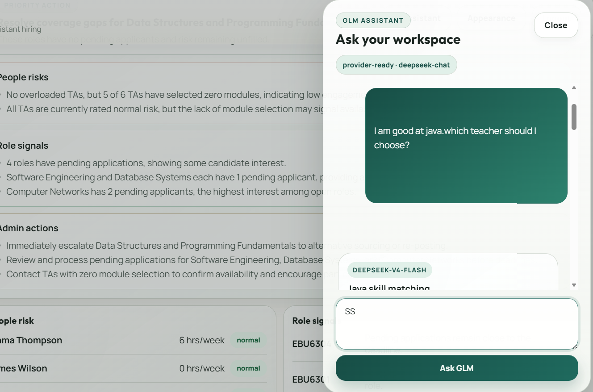
7. Known Limitations
- JSON File Storage — data is persisted in local JSON files under
data/, not in a production-grade database. Concurrent write conflicts are possible under heavy load.
- AI Output is Advisory — all AI-generated content (job matches, candidate summaries, risk analyses) is a reference tool. Human review and judgment remain required for all decisions.
- Desktop-First Design — the UI is optimized for desktop browsers (1200px+). Mobile and tablet layouts are not fully tested in this sprint.
- Single Session Per Browser — logging in as a different role in the same browser window replaces the existing session. Use incognito/private windows for simultaneous multi-role testing.
- CV Access Requires Session — CV file viewing is authenticated. Direct URL access without a valid session will be denied.
- No Email Notifications — status changes and application updates are reflected in-app only. No external email notifications are sent.
TA Recruitment System — Group 02 — EBU6304 Software Engineering — 2025/26